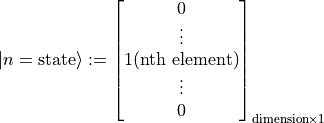
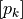
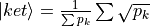
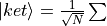
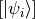

Quantum States (qTools.QuantumToolbox.states)¶
Contains methods to create states, such as ket, bra, densityMatrix, superpositions, etc.
Functions¶
|
Creates a ket state |
|
Creates a bra state |
|
Creates a column matrix (ket) with all elements zero. |
|
Creates a complete basis of ket states |
 for a given dimension with 1 (unit population) at a given row.
for a given dimension with 1 (unit population) at a given row.
|
Creates a superposition ket state in various ways. |
|
Computes the density matrix for both pure and mixed states. |
|
Function to normalise any state (ket or density matrix). |
|
Function to create composite ket states. |
|
Creates a set of density matrices |
|
Weighted sum |
|
Converts density matrix into density vector (used in super-operator representation). |
|
Converts density vector into density matrix. |
|
Creates a Bell state |
 , where
, where -
basis(dimension: int, state: int, sparse: bool = True) → Union[scipy.sparse.base.spmatrix, numpy.ndarray][source]¶ Creates a ket state  for a given dimension with 1 (unit population) at a given row.
- Parameters
dimension (int) – dimension of Hilbert space
state (int) – row to place 1, i.e. index for the populated state
sparse (bool) – if True(False), the returned Matrix type will be sparse(array)
- Returns
requested ket state
- Return type
Matrix
Examples
>>> print(basis(2, 0)) (0, 0) 1
>>> basis(2, 0, sparse=False) [[1] [0]]
-
completeBasis(dimension: int, sparse: bool = True) → List[Union[scipy.sparse.base.spmatrix, numpy.ndarray]][source]¶ Creates a complete basis of ket states
 ,
st
,
st  .
.- Parameters
dimension (int) – dimension of Hilbert space
sparse (bool) – if True(False), the returned Matrix types will be sparse(array)
- Returns
a list (complete basis) of ket states
- Return type
matrixList
Examples
>>> completeBasis(2, sparse=False) [array([[1], [0]], dtype=int64), array([[0], [1]], dtype=int64)]
-
basisBra(dimension: int, state: int, sparse: bool = True) → Union[scipy.sparse.base.spmatrix, numpy.ndarray][source]¶ Creates a bra state
 for a given dimension with 1 (unit population) at a
given column. This function simply returns transpose of
for a given dimension with 1 (unit population) at a
given column. This function simply returns transpose of basis.- Parameters
dimension (int) – dimension of Hilbert space
state (int) – column to place 1, i.e. index number for the populated state
sparse (bool) – if True(False), the returned Matrix type will be sparse(array)
- Returns
requested bra state
- Return type
Matrix
Examples
>>> print(basisBra(2, 0)) (0, 0) 1
>>> basisBra(2, 0, sparse=False) [[1 0]]
-
zeros(dimension: int, sparse: bool = True) → Union[scipy.sparse.base.spmatrix, numpy.ndarray][source]¶ Creates a column matrix (ket) with all elements zero.
- Parameters
dimension (int) – dimension of Hilbert space
sparse (bool) – boolean for sparse or not (array)
- Returns
ket of zeros
- Return type
Matrix
Examples
>>> print(zeros(2)) (0, 0) 0
>>> zeros(2, sparse=False) [[0] [0]]
-
weightedSum(summands: Iterable, weights: Optional[Iterable] = None) → Any[source]¶ Weighted sum
 of given list of summands
of given list of summands  and weights
and weights  .
.- Parameters
summands (Iterable) – List of matrices
weights (Iterable) – List of weights
- Returns
weighted sum
- Return type
Any
-
superPos(dimension: int, excitations: Union[Dict[int, float], List[int], int], populations: bool = True, sparse: bool = True) → Union[scipy.sparse.base.spmatrix, numpy.ndarray][source]¶ Creates a superposition ket state in various ways.
Given excitations is
1. a dictionary : keys = [k] of the dictionary are the states
basis(dimension, k) ,
and the values are
,
and the values are1.
populations = True: values =  are populations of the corresponding keys. They do not need to sum to 1. The state gets normalised, so these are relative populations.Output state

basis(dimension, k)2.
populations = True: values =![[c_{k}]](../_images/math/f048e02a118d7d9451099e4a0dd58ba82df89ecf.png) are the complex probability amplitudes. The output
state gets normalised.
are the complex probability amplitudes. The output
state gets normalised.Ouput state

basis(dimension, k)a list [k] of N integers corresponding to states
basis(dimension, k) with equal weightsOutput state

basis(dimension, k)an integer, to create a basis state (equivalent to
basisfunction)
- Parameters
dimension (int) – dimension of Hilbert space
excitations (supInt (Union of int, list(int), dict(int:float))) – see above
populations (bool) – If True (False) dictionary keys are the populations (complex probability amplitudes)
- Returns
requested normalised ket state
- Return type
Matrix
Examples
>>> superPos(2, {0:0.2, 1:0.8}, sparse=False) [[0.4472136 ] [0.89442719]]
>>> superPos(2, [0,1], sparse=False) [[0.70710678] [0.70710678]]
>>> superPos(2, 1, sparse=False) [[0.] [1.]]
-
densityMatrix(ket: Union[scipy.sparse.base.spmatrix, numpy.ndarray, List[Union[scipy.sparse.base.spmatrix, numpy.ndarray]]], probability: Optional[Iterable[Any]] = None) → Union[scipy.sparse.base.spmatrix, numpy.ndarray][source]¶ Computes the density matrix for both pure and mixed states.
Given a pure ket
 state
stateOutput state

Given a list of kets states  and their associated probabilities
![[w_{i}]](../_images/math/608e94db6e51f80e3353590dc34c48ff67a65c56.png)
Output mixed state
 from a list of kets
from a list of kets
- Parameters
ket (matrixOrMatrixList) – single ket state or list of kets
probability (floatList) – list of probabilities (0 to 1) associated with the corresponding list of kets
- Returns
requested density matrix operator
- Return type
Matrix
Examples
>>> ket = basis(2, 0) >>> print(densityMatrix(ket)) (0, 0) 1
>>> ket = superPos(2, [0,1], sparse=False) >>> densityMatrix(ket) [[0.5 0.5] [0.5 0.5]]
>>> ket1 = superPos(2, [0,1], sparse=False) >>> ket2 = basis(2, 0) >>> densityMatrix([ket1,ket2],[0.5, 0.5]) [[0.75 0.5] [0.5 0.25]]
-
completeBasisMat(dimension: Optional[int] = None, compKetBase: Optional[List[Union[scipy.sparse.base.spmatrix, numpy.ndarray]]] = None, sparse: bool = True) → List[Union[scipy.sparse.base.spmatrix, numpy.ndarray]][source]¶ Creates a set of density matrices
 st
for a given dimension or
convert a ket basis to density matrix.
st
for a given dimension or
convert a ket basis to density matrix.NOTE: This is not a complete basis for n-by-n matrices but for populations, i.e. diagonals.
For a given basis, this keeps the sparse/array as sparse/array.
- Parameters
dimension (int or None) – dimension of Hilbert space (or default None if a ket basis is given)
compKetBase (matrixList or None) – a complete ket basis (or default None if dimension is given)
sparse (bool) – if True(False), the returned Matrix type will be sparse(array)
- Returns
matrixList – a list (complete basis) of density matrices
raises ValueError : raised if both complete ket basis and dimension are None (default). Dimension is used to create
Examples
>>> completeBasisMat(dimension=2, sparse=False) [array([[1, 0], [0, 0]], dtype=int64), array([[0, 0], [0, 1]], dtype=int64)]
-
normalise(state: Union[scipy.sparse.base.spmatrix, numpy.ndarray]) → Union[scipy.sparse.base.spmatrix, numpy.ndarray][source]¶ Function to normalise any state (ket or density matrix).
For ket states

For density matrices


Keeps the sparse/array as sparse/array
- Parameters
state (Matrix) – state to be normalised
- Returns
normalised state
- Return type
Matrix
Examples
>>> import numpy as np >>> nonNormalisedKet = np.sqrt(0.2)*basis(2,1) + np.sqrt(0.8)*basis(2,0) >>> normalise(nonNormalisedKet) [[0.89442719] [0.4472136 ]]
>>> nonNormalisedMat = densityMatrix(nonNormalisedKet) >>> normalise(nonNormalisedMat) [[0.8 0.4] [0.4 0.2]]
-
compositeState(dimensions: List[int], excitations: List[Union[Dict[int, float], List[int], int]], sparse: bool = True) → Union[scipy.sparse.base.spmatrix, numpy.ndarray][source]¶ Function to create composite ket states. Uses
superPosto create individual states andtensorProdto calculate their tensor product.- Parameters
dimensions (intList) – list of dimensions for each sub-system of the composite quantum system
excitations (List[supInp]) – list of state information for sub-systems. This list can have mixture of dict, list, and int values, which are used to create a superposition state for the corresponding sub-system See: superPos function
sparse (bool) – boolean for sparse or not (array)
- Returns
composite ket state
- Return type
Matrix
Examples
>>> compositeState(dimensions=[2, 2], excitations=[0,1], sparse=False) [[0] [1] [0] [0]]
>>> compositeState(dimensions=[2, 2], excitations=[[0,1],1], sparse=False) [[0. ] [0.70710678] [0. ] s[0.70710678]]
>>> compositeState(dimensions=[2, 2], excitations=[0,{0:0.2, 1:0.8}], sparse=False) [[0.4472136 ] [0.89442719] [0. ] [0. ]]
-
mat2Vec(denMat: Union[scipy.sparse.base.spmatrix, numpy.ndarray]) → Union[scipy.sparse.base.spmatrix, numpy.ndarray][source]¶ Converts density matrix into density vector (used in super-operator representation).
Keeps the sparse/array as sparse/array
- Parameters
denMat (Matrix) – density matrix to be converted
- Returns
density vector
- Return type
Matrix
Examples
>>> denMat = densityMatrix(ket=basis(dimension=2, state=1, sparse=True)) >>> mat2Vec(denMat=denMat).A [[0] [0] [0] [1]]
-
vec2Mat(vec: Union[scipy.sparse.base.spmatrix, numpy.ndarray]) → Union[scipy.sparse.base.spmatrix, numpy.ndarray][source]¶ Converts density vector into density matrix.
Keeps the sparse/array as sparse/array
- Parameters
vec (Matrix) – density vector to be converted
Matrix – density matrix
Examples
>>> denMat = densityMatrix(ket=basis(dimension=2, state=1, sparse=True)) >>> print(denMat.A) [[0 0] [0 1]]
>>> denVec = mat2Vec(denMat=denMat) >>> vec2mat(vec=denVec).A [[0 0] [0 1]]
-
BellStates(bs: str = 'Phi+', sparse: bool = True) → Union[scipy.sparse.base.spmatrix, numpy.ndarray][source]¶ Creates a Bell state
 , where
, where  .
.- Parameters
bs (str, optional) – String for different Bell states, by default ‘Phi+’. Options are [‘Phi+’ or ‘00’, ‘Phi-‘ or ‘01’, ‘Psi+’ or ‘10’, ‘Psi-‘ or ‘11’]
sparse (bool) – if True(False), the returned Matrix type will be sparse(array)
- Returns
Bell state
- Return type
Matrix
Examples
>>> BellStates('Phi+').A array([[0.70710678], [0. ], [0. ], [0.70710678]]) >>> BellStates('Phi-').A array([[ 0.70710678], [ 0. ], [ 0. ], [-0.70710678]]) >>> BellStates('Psi+').A array([[0. ], [0.70710678], [0.70710678], [0. ]]) >>> BellStates('Psi-').A array([[ 0. ], [ 0.70710678], [-0.70710678], [ 0. ]]